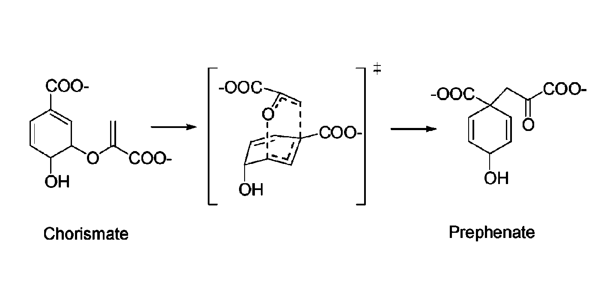
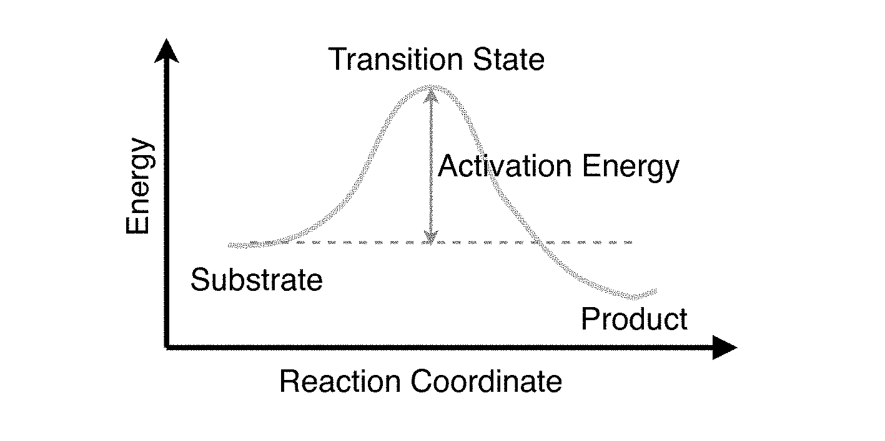

In this practical you will be modelling the enzyme catalysed reaction of chorismate to prephenate.
This is an intramolecular reaction. The reaction proceeds via a cyclic transition state. A reaction coordinate can be defined as the difference between the length of the C-O bond that is breaking, and the length of the C-C bond that is forming. Plotting the energy of the molecule as a function of this reaction coordinate returns a reaction energy profile.
You can use this profile to identify the substrate (chorismate), the product (prephenate) and the transition state. The difference between the energy of the substrate and the energy of the transition state is called the activation energy. The lower the activation energy, the faster the reaction.
This reaction is catalysed by the enzyme chorismate mutase. Chorismate mutase catalyses the conversion of chorismate to prephenate by lowering the activation energy of the reaction. The difference between the normal activation energy and the enzyme catalysed activation energy is called the stabilisation energy. The stabilisation energy measures by how much the enzyme lowers the activation energy, and thereby speeds up the reaction.
In this practical you will be modelling this reaction both in the gas phase and also with the enzyme. You will be doing this to calculate by how much the enzyme reduces the activation energy of the reaction, and also to provide evidence to suggest how the enzyme achieves catalysis. To do this, you will be performing computational chemistry calculations of the complete condensed phase enzyme / substrate / water system.
Modelling reactions in enzymes presents several additional challenges to those encountered when modelling reactions in small molecules. The origin of most of these arise because there are simply lots more atoms and molecules to take into account! When we study enzyme catalysed reactions, quantum mechanics is required to model the chemical reaction, but quantum mechanics is far too computationally expensive to use to model a whole enzyme! To get around this, we combine quantum mechanics with a simplified model of the enzyme and water solvent, called molecular mechanics. This combined QM/MM model (awarded the Nobel Prize for Chemistry in 2013) uses quantum mechanics to model the parts of the system undergoing the reaction, while the rest of the system is modelled using a simple "balls on springs" representation. The interactions between the MM atoms are described by the laws of classical physics, with simple potential energy functions used to calculate the interactions between spheres. The hard part of the model is how to calculate the interactions between the classical MM atoms and the quantum mechanical atoms.
We can use the QM/MM model of the enzyme and substrate to model the reaction using a technique called adiabatic mapping. The reaction is described using a reaction coordinate (in this case the difference between the lengths of the C-O bond breaking during the reaction and the length of the C-C bond forming). The structure of the enzyme, substrate and water solvent can be minimised at different values of the reaction coordinate, and the minimum energy obtained. The plot of the minimum energy as a function of the reaction coordinate is the energy profile of the reaction, and the difference between the minimum energy of the substrate and the highest energy along the profile (which occurs at the transition state) is the activation energy of the reaction. By comparing the activation energy of the reaction for the free substrate to the activation energy when the substrate is bound to the enzyme, we can determine the amount of stabilisation the enzyme provides, and therefore by how much the enzyme accelerates the reaction. The profiles can provide even more information, for example how the enzyme accelerates the reaction (is it by stabilising the transition state?). The investigation of enzyme reactions using a computer (computational enzymology) is an exciting science, with the potential to one day let us design new enzymes on a computer. Calculations like the ones you will perform during this practical were run here at Bristol to provide new insights into how enzymes work. If you are interested in finding out more, please take a look at some of the papers listed in the further reading section.